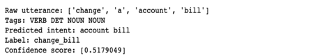

Intent Detection
Spring 2020 @University of Texas at Dalls - My team of 6 Senior CS/SE students and I, in Senior Project course, had cooperated with Concentrix supervisors to build a web-based tool to detect and generate intents withdrawn from given utterances. Our tool helps Speech scientists without strong coding skills easily remove noise, correct misspelling, and detect intents. Our core AI section is developed around 2 separate models, Potential Intents and True Intents models which respectively generate potential intents and finalize mostly correct intents.
Many thanks to our Concentrix supervisor, Satya Palivela , and our talented teammates: Matthew Kunjammen, Johnathan Kim, Lan Vu, Tung Vu, and Frank Yang who developed UI and Backend-Databases sides and integrated my AI-server.
In this project, as an AI/ML engineer, I was responsible for researching, delivering NLP solutions, and deploying into productiong using Flask API and Tensorflow Serving. Through this project, I have broaden my knowledge in Natural Language Processing and skills in deploying AI into production:
- Glove Embedding - pre-trained by Stanford
- Multi-Head-Attention to distribute gradients and to attach focus of past words on a specific part of a sentence
- Conditional Random Field to perform conditional classification, instead of statistics classification
- Tensorflow Serving - Flask API
Problem:
Intente Detection problem belongs to the Natural Language Understanding domain. This problem have been considered and solved by Classification solutions, e.g. DiagFlow using BERT to classify a give utterance to a predefined intent class. Classification solutions has shown its power in classifying intents with accuracy above 90%. However, it's limit is the list of predefined-intent classes, which may require huge effort and time into prepareing truth data. Manually labeling intents for each utterance is a time-consuming and labor-consuming task that not all companies or scientists could do.
Example:
Utterance: I want to cancel payment, now please.
Intent: cancen payment
Tech used: VueJS, NodeJS, Flask, SQL, RESTful API, Tensorflow/Keras
NLP terms in use: Glove Embeddings, Tokenizer, Bidirectional Long-Short-Term-Memory (Bi-LSTM), Multi-Head Attention (MHA), and Conditional Random Field
Solution:
Our proposed solution is to develop a web application which archiecture consists of 3 separate RESTful API servers: UI - Backend/Database - AI. This design is to focus on the communication interface among servers which allows independent development, easy maintenance, and minimum changes in neighboring modules.

Our core AI-NLP section is built around 2 separate models named: Potential Intents and True Intents models for generating potential intents and finalizing correct intents respectively. Potential Intents model bases on Bidirectional Long-Short-Term-Memory (Bi-LSTM) and Conditional Random Field (CRF); and True Intents model bases on Multi-Layer-Perceptron model. The combination of these 2 modules achieves the intent detection at accuracy of 75%.
Screen shot of our product

Screen shot of a intent-detected sample

All source codes are reseved and belonged to Concentrix. Details of NLP models are not public due to NDA.